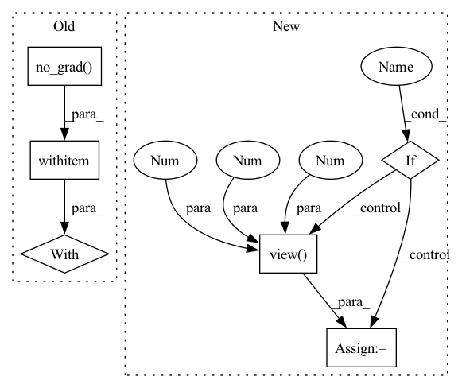

Pattern ID :32564

Before Change
conv_weight = conv_weight * factor.view(-1, 1, 1, 1)
if conv_bias is None:
conv_bias = 0
with torch.no_grad():
conv_bias = (conv_bias - bn_running_mean) * factor + bn_bias
conv_merge = nn.Conv2d(
conv.in_channels,
After Change
is_deconv = isinstance(conv, nn.ConvTranspose2d)
with torch.no_grad():
factor = bn_weight / torch.sqrt(bn_running_var + eps)
if is_deconv:
conv_weight = conv_weight * factor.view(1, -1, 1, 1)
else:
conv_weight = conv_weight * factor.view(-1, 1, 1, 1)
if conv_bias is None:
conv_bias = 0
In pattern: SUPERPATTERN
Frequency: 3
Non-data size: 6
Instances
Fragment ID: 94775172
Project Name: thu-mig/torch-model-compression
Commit Name: 6c48f8a67d84cbc4d3079cbff5ab516b62dd2ff5
Time: 2022-01-17
Author: gdh1995@qq.com
File Name: torchslim/modules/rep_modules.py
M Class Name: AnonimousClass
N Class Name: AnonimousClass
M Method Name: merge_conv_bn(2)
N Method Name: merge_conv_bn(2)
M Parent Class:
N Parent Class:
M File Name: torchslim/modules/rep_modules.py
N File Name: torchslim/modules/rep_modules.py
M Start Line: 19
M End Line: 35
N Start Line: 16
N End Line: 30
'>
Before Change
p.requires_grad = False
def forward(self, x):
with torch.no_grad():
return self.laplacian(x)
After Change
@torch.no_grad()
def forward(self, x):
x = self.laplacian(x)
if self.use_threshold:
x_thr = torch.quantile(
x.view(x.size(0), 1, -1), 0.80, dim=2).view(x.size(0), 1, 1, 1)
x[x < x_thr] = 0.
return x
'>
Fragment ID: 94775169
Project Name: westlake-ai/openmixup
Commit Name: 1969d56d997a214a2d5f909c64998f458d2009b1
Time: 2022-04-25
Author: 1070535169@qq.com
File Name: openmixup/models/utils/sobel.py
M Class Name: Laplacian
N Class Name: Laplacian
M Method Name: forward(2)
N Method Name: forward(2)
M Parent Class: nn.Module
N Parent Class: nn.Module
M File Name: openmixup/models/utils/sobel.py
N File Name: openmixup/models/utils/sobel.py
M Start Line: 65
M End Line: 66
N Start Line: 94
N End Line: 100
'>
Before Change
p.requires_grad = False
def forward(self, x):
with torch.no_grad():
return self.sobel(x)
class Laplacian(nn.Module):
After Change
@torch.no_grad()
def forward(self, x):
x = self.sobel(x)
if self.use_threshold:
x_thr = torch.quantile(
x.view(x.size(0), 1, -1), 0.80, dim=2).view(x.size(0), 1, 1, 1)
x[x < x_thr] = 0.
return x
'>
Fragment ID: 94775146
Project Name: westlake-ai/openmixup
Commit Name: 1969d56d997a214a2d5f909c64998f458d2009b1
Time: 2022-04-25
Author: 1070535169@qq.com
File Name: openmixup/models/utils/sobel.py
M Class Name: Sobel
N Class Name: Sobel
M Method Name: forward(2)
N Method Name: forward(2)
M Parent Class: nn.Module
N Parent Class: nn.Module
M File Name: openmixup/models/utils/sobel.py
N File Name: openmixup/models/utils/sobel.py
M Start Line: 32
M End Line: 35
N Start Line: 45
N End Line: 51